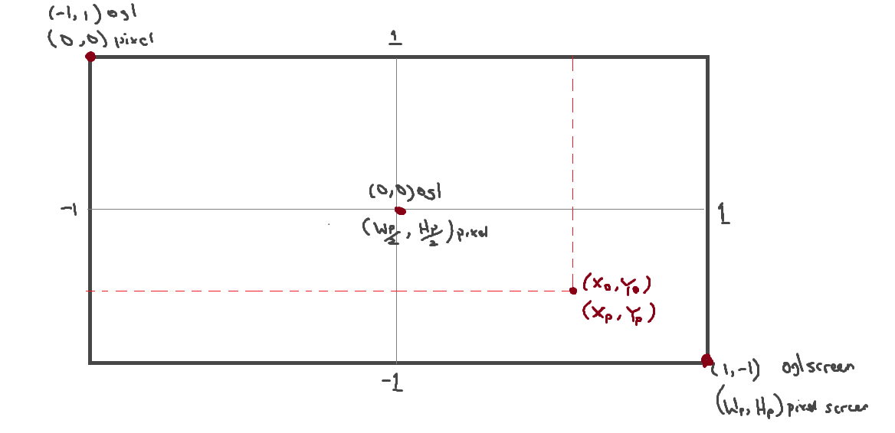

How to draw Quad better option
Basic Shader
basic.shader
#shader vertex
#version 330 core
layout(location = 0) in vec4 pos;
void main(){
gl_Position = pos;
}
#shader fragment
#version 330 core
layout(location=0) out vec4 color;
uniform vec4 new_color;
void main(){
// color = vec4(1.0, 1.0, 0.5, 1.0);
color = new_color;
}
ShaderProgram Class
ShaderProgram.h
#pragma once
#include <iostream>
#include <sstream>
#include <fstream>
struct ShaderSource {
std::string VertSource;
std::string FragSource;
};
class ShaderProgram {
unsigned int vbo{}, vao{};
unsigned int sh_id{}, prog_id{}; // Shader and Program id
ShaderSource ParseShader(const std::string& filePath)
{
enum class shType { NONE = -1, VERT = 0, FRAG = 1 };
shType type = shType::NONE; // use to seperate lines of shaders
std::stringstream ss[2]; // array to hold the shaders
std::ifstream stream(filePath); // load the file src in stream
std::string line{}; // holder for each line
while (getline(stream, line)) {
if (line.find("#shader") != std::string::npos) {
if (line.find("vertex") != std::string::npos)
type = shType::VERT;
else if (line.find("fragment") != std::string::npos)
type = shType::FRAG;
}
else {
ss[(int)type] << line << "\n";
}
}
return { ss[0].str(), ss[1].str() };
}// end ParseShader
unsigned int CompileShader(unsigned int type, const std::string& source) {
sh_id = glCreateShader(type);
const char* shader_src = source.c_str();
glShaderSource(sh_id, 1, &shader_src, nullptr);
glCompileShader(sh_id);
int success;
glGetShaderiv(sh_id, GL_COMPILE_STATUS, &success);
if (success == GL_FALSE) {
int length;
glGetShaderiv(sh_id, GL_INFO_LOG_LENGTH, &length);
char* msg = (char*)alloca(length * sizeof(char));
glGetShaderInfoLog(sh_id, length, &length, msg);
/*char msg[1024];
glGetShaderInfoLog(shader_id, 1024, NULL, msg);*/
std::cout << (type == GL_VERTEX_SHADER ? "vertex" : "fragment") << " Shader Error: \n" << msg << "\n";
std::cout << msg << std::endl;
glDeleteShader(sh_id);
return 0;
}
return sh_id;
}// end CompileShader
unsigned int CreateShaderProgram(const std::string& vertShader, const std::string& fragShader) {
prog_id = glCreateProgram();
unsigned int vs = CompileShader(GL_VERTEX_SHADER, vertShader);
unsigned int fs = CompileShader(GL_FRAGMENT_SHADER, fragShader);
glAttachShader(prog_id, vs);
glAttachShader(prog_id, fs);
glLinkProgram(prog_id);
glValidateProgram(prog_id);
glDeleteShader(vs);
glDeleteShader(fs);
return prog_id;
}// end CreateShaderProgram : vs, fs
unsigned int CreateShaderProgram(const std::string& filePath) {
ShaderSource shaderSource = ParseShader(filePath);
return CreateShaderProgram(shaderSource.VertSource.c_str(), shaderSource.FragSource.c_str());
} // end CreateShaderProgram : filepath
void init() {};
public:
ShaderProgram(const std::string& filePath) {
CreateShaderProgram(filePath);
};
ShaderProgram(const std::string& vertShader, const std::string& fragShader) {
CreateShaderProgram(vertShader, fragShader);
}
void useProgram() {
glUseProgram(prog_id);
}
void Uniform4f(const char* uniform_string, float x, float y, float z, float w) {
unsigned int u_id = glGetUniformLocation(prog_id, uniform_string);
glUniform4f(u_id, x, y, z, w);
}
unsigned int getShaderID() const { return sh_id; }
unsigned int getProgramID() const { return prog_id; }
};
Main Class
main.cpp
#include <GL/glew.h>
#include <GLFW/glfw3.h>
#include "ShaderProgram.h"
int main(void)
{
GLFWwindow* window;
/* Initialize the library */
if (!glfwInit())
return -1;
/* Create a windowed mode window and its OpenGL context */
window = glfwCreateWindow(640, 480, "Hello World", NULL, NULL);
if (!window) {
glfwTerminate();
return -1;
}
glfwWindowHint(GLFW_CONTEXT_VERSION_MAJOR, 3);
glfwWindowHint(GLFW_CONTEXT_VERSION_MINOR, 3);
glfwWindowHint(GLFW_OPENGL_PROFILE, GLFW_OPENGL_CORE_PROFILE);
glfwMakeContextCurrent(window); /* Make window's context current */
if (glewInit() != GLEW_OK)
std::cout << "Error! at GLEW " << std::endl;
// Get the OPENGL VERSION
/* std::cout << glGetString(GL_VERSION) << std::endl;
*/
float position[10] =
{
-0.3f, -0.5f, // point 0
0.5f, -0.5f, // point 1
0.5f, 0.5f, // point 2
-0.5f, 0.5f, // point 3
0.4f, 0.9f // point 4
};
unsigned int pos_index[9] =
{
0, 1, 2,
2, 3, 0,
2, 4, 3
};
unsigned int va_id, vb_id, ib_id;
glGenVertexArrays(1, &va_id);
glBindVertexArray(va_id);
glGenBuffers(1, &vb_id);
glBindBuffer(GL_ARRAY_BUFFER, vb_id);
glBufferData(GL_ARRAY_BUFFER, 10 * sizeof(float), position, GL_STATIC_DRAW);
glGenBuffers(1, &ib_id);
glBindBuffer(GL_ELEMENT_ARRAY_BUFFER, ib_id);
glBufferData(GL_ELEMENT_ARRAY_BUFFER, 9 * sizeof(unsigned int), pos_index, GL_STATIC_DRAW);
glEnableVertexAttribArray(0);
glVertexAttribPointer(0, 2, GL_FLOAT, GL_FALSE, sizeof(float) * 2, 0);
ShaderProgram sProg("src/basic.shader");
sProg.useProgram();
sProg.Uniform4f("new_color", 0.7f, 0.2f, 0.3f, 1.0f);
while (!glfwWindowShouldClose(window)) { /* Loop until the user closes win */
/* Render here */
glClear(GL_COLOR_BUFFER_BIT);
glBindVertexArray(va_id);
glDrawElements(GL_LINE_STRIP, 9, GL_UNSIGNED_INT, nullptr); // Draw strip
//glDrawElements(GL_TRIANGLES, 9, GL_UNSIGNED_INT, nullptr);
glfwSwapBuffers(window); /* Swap front and back buffers */
glfwPollEvents(); /* Poll for and process events */
}
glfwTerminate();
return 0;
}
Texture drawing class
Texture.h
#pragma once
#include <iostream>
#include <GL/glew.h>
class Texture
{
private:
unsigned int texture_id; // Load and create image
unsigned int m_glTexture_num{ GL_TEXTURE0 };
public:
static int texture_count;
Texture(std::string texturePath);
void Bind() const;
};
Texture.cpp
#include "Texture.h"
#define STB_IMAGE_IMPLEMENTATION
#include "stb_image.h"
int Texture::texture_count = 0;
Texture::Texture(std::string texturePath) {
texture_count ++;
// Switch the OpenGl texture, i.e. (GL_TEXTURE0 -> GLTEXTURE1 -> GL_TEXTURE2 ...)
// if more texture detected
if (texture_count > 1 )
m_glTexture_num = m_glTexture_num + texture_count - 1;
// Load and create image
texture_id;
// texture 1
// ---------
glGenTextures(1, &texture_id);
glBindTexture(GL_TEXTURE_2D, texture_id);
// set the texture wrapping parameters
glTexParameteri(GL_TEXTURE_2D, GL_TEXTURE_WRAP_S, GL_REPEAT); // set texture wrapping to GL_REPEAT (default wrapping method)
glTexParameteri(GL_TEXTURE_2D, GL_TEXTURE_WRAP_T, GL_REPEAT);
// set texture filtering parameters
glTexParameteri(GL_TEXTURE_2D, GL_TEXTURE_MIN_FILTER, GL_LINEAR);
glTexParameteri(GL_TEXTURE_2D, GL_TEXTURE_MAG_FILTER, GL_LINEAR);
// load image, create texture and generate mipmaps
int width, height, nrChannels;
stbi_set_flip_vertically_on_load(true); // tell stb_image.h to flip loaded texture's on the y-axis.
unsigned char* data = stbi_load(texturePath.c_str(), &width, &height, &nrChannels, 0);
if (data)
{
glTexImage2D(GL_TEXTURE_2D, 0, GL_RGB, width, height, 0, GL_RGB, GL_UNSIGNED_BYTE, data);
glGenerateMipmap(GL_TEXTURE_2D);
}
else
{
std::cout << "Failed to load texture" << std::endl;
}
stbi_image_free(data);
}
void Texture::Bind() const
{
// bind textures on corresponding texture units
glActiveTexture(m_glTexture_num);
glBindTexture(GL_TEXTURE_2D, texture_id);
}
Modifying the Shader
basic.shader
#shader vertex
#version 330 core
layout (location = 0) in vec3 aPos;
layout (location = 1) in vec2 aTexCoord;
out vec2 TexCoord;
void main()
{
gl_Position = vec4(aPos, 1.0);
TexCoord = vec2(aTexCoord.x, aTexCoord.y);
}
#shader fragment
#version 330 core
out vec4 FragColor;
in vec2 TexCoord;
uniform sampler2D texture1;
uniform sampler2D texture2;
void main()
{
FragColor = mix(texture(texture1, TexCoord), texture(texture2, TexCoord), 0.5);
}
Using the Texture Class
main.cpp
...
glVertexAttribPointer(1, 2, GL_FLOAT, GL_FALSE, 5 * sizeof(float), (void*)(3 * sizeof(float)));
glEnableVertexAttribArray(1);
Texture tex1("imgs/download.jpg");
Texture tex2("imgs/avatar200.jpg");
ShaderProgram sProg("src/basic.shader");
sProg.useProgram();
sProg.SetInt("texture1", 0);
sProg.SetInt("texture2", 1);
while (!glfwWindowShouldClose(window)) { /* Loop until the user closes win */
...
tex1.Bind();
tex2.Bind();
...
Here is the full srcs:
- Texture.h
- Texture.cpp
- ShaderProgram.h
- ShaderProgram.cpp
- basic.shader
- stb_image.h github repo here
Open GL Screen normalization, coordinate convertion
The goal here is to convert the opengl coordinate to pixel based.

where,
- \(X_o\), \(Y_o\) are current point openGl screen coordinate
- \(X_p\), \(Y_p\) are current point Pixel screen coordinate
- \(W_p\), \(H_p\) pixel screen width and height resolution
Find the OpengGl X coord
Finding \(X_o\),
\[\frac{X_o-(-1)}{X_p - 0} = \frac{1-(-1)}{W_p - 0}\]
\[\frac{X_o + 1}{X_p} = \frac{2}{W_p}\]
\[\boxed{X_o = \frac{2X_p}{W_p} - 1 --- (1)}\]
Find the OpengGl Y coord
Finding \(Y_o\),
\[\frac{Y_o-(1)}{Y_p - 0} = \frac{-1 - 1}{W_h - 0}\]
\[\frac{Y_o - 1}{Y_p} = \frac{-2}{W_h}\]
\[\boxed{ X_o = \frac{-2X_p}{W_p} + 1 --- (2)}\]
Implementing it in OpenGL
This are the basic representation in cpp
float coordConvert(int dim, DimType type) {
if (type == X) return static_cast<float>(((2.0 * dim) / Width) - 1);
else if (type == Y) return static_cast<float>(((-2.0 * dim) / Height) + 1);
}
Position Point(int Xdim, int Ydim) {
return { coordConvert(Xdim, X), coordConvert(Ydim, Y) };
}
...
// we call it here like so
std::vector<Position> vert_p;
vert_p.push_back(Point(20, 20));
vert_p.push_back(Point(400, 50));
vert_p.push_back(Point(600, 400));
vert_p.push_back(Point(30, 480));
This is the full implementation
#include <iostream>
#include <GL/glew.h>
#include <GLFW/glfw3.h>
#include <fstream>
#include <sstream>
#include <vector>
int Width = 960;
int Height = 540;
enum DimType { X, Y };
struct Position {float x; float y;};
float coordConvert(int dim, DimType type) {
if (type == X) return static_cast<float>(((2.0 * dim) / Width) - 1);
else if (type == Y) return static_cast<float>(((-2.0 * dim) / Height) + 1);
}
Position Point(int Xdim, int Ydim) {
return { coordConvert(Xdim, X), coordConvert(Ydim, Y) };
}
struct ShaderSource {std::string VertSource; std::string FragSource;};
static ShaderSource ParseShader(const std::string& filePath){. . . .}
static unsigned int CompileShader(unsigned int type, const std::string& source) { . . . . }// end CompileShader
static unsigned int CreateShaderProgram(const std::string& vertShader, const std::string& fragShader) { . . . . }
static unsigned int CreateShaderProgram(const std::string& filePath) {
ShaderSource shaderSource = ParseShader(filePath);
return CreateShaderProgram(shaderSource.VertSource.c_str(), shaderSource.FragSource.c_str());
}
int main(void)
{
GLFWwindow* window;
/* Initialize the library */
if (!glfwInit()) return -1;
/* Create a windowed mode window and its OpenGL context */
window = glfwCreateWindow(Width, Height, "Tutorial 01", NULL, NULL);
if (!window){
glfwTerminate();return -1;
}
//glfwSwapInterval(1);
/* Make the window's context current */
glfwMakeContextCurrent(window);
if (glewInit() != GLEW_OK) {
std::cout << " Glew Error \n";
}
std::vector<Position> vert_p;
vert_p.push_back(Point(20, 20));
vert_p.push_back(Point(400, 50));
vert_p.push_back(Point(600, 400));
vert_p.push_back(Point(30, 480));
int indices[6] = {
0, 1, 3,
1, 2, 3
};
unsigned int vao, vbo, ibo;
glGenVertexArrays(1, &vao);
glGenBuffers(1, &vbo);
glGenBuffers(1, &ibo);
glBindVertexArray(vao);
glBindBuffer(GL_ARRAY_BUFFER, vbo);
glBufferData(GL_ARRAY_BUFFER,vert_p.size() * sizeof(Position), vert_p.data(), GL_STATIC_DRAW);
glBindBuffer(GL_ELEMENT_ARRAY_BUFFER, ibo);
glBufferData(GL_ELEMENT_ARRAY_BUFFER, 6 * sizeof(int), indices, GL_STATIC_DRAW);
glEnableVertexAttribArray(0);
glVertexAttribPointer(0, 2, GL_FLOAT, GL_FALSE, 2 * sizeof(float), 0);
glBindVertexArray(0);
//Linking the program
GLuint prog = CreateShaderProgram("res/shader/basic1.shader");
glUseProgram(prog);
/* glUniform4f(glGetUniformLocation(prog, "u_color"),0.9f, 0.9f, 0.1f, 3.0f);*/
glUniform2f(glGetUniformLocation(prog, "u_resolution"), Width, Height);
/* Loop until the user closes the window */
float time_step = 0.0001f;
float current_time = 0.0f;
while (!glfwWindowShouldClose(window))
{
/* Render here */
glClear(GL_COLOR_BUFFER_BIT);
glBindVertexArray(vao);
glUniform1f(glGetUniformLocation(prog, "u_time"), current_time);
current_time += time_step;
glDrawElements(GL_TRIANGLES, 6, GL_UNSIGNED_INT, 0);
/* Swap front and back buffers */
glfwSwapBuffers(window);
/* Poll for and process events */
glfwPollEvents();
}
glfwTerminate();
return 0;
}